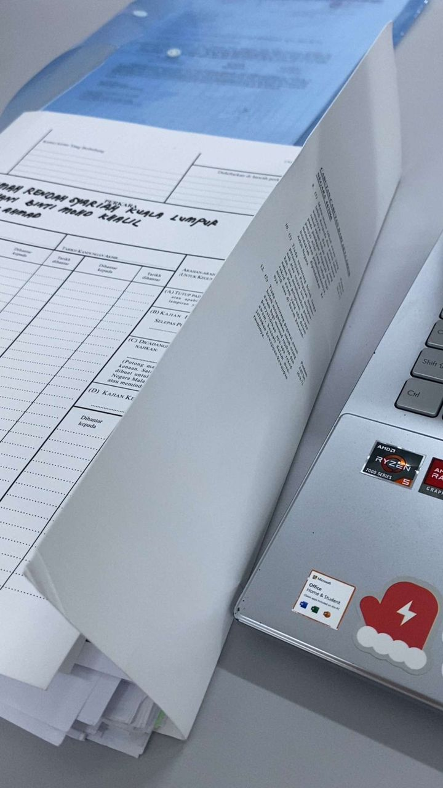
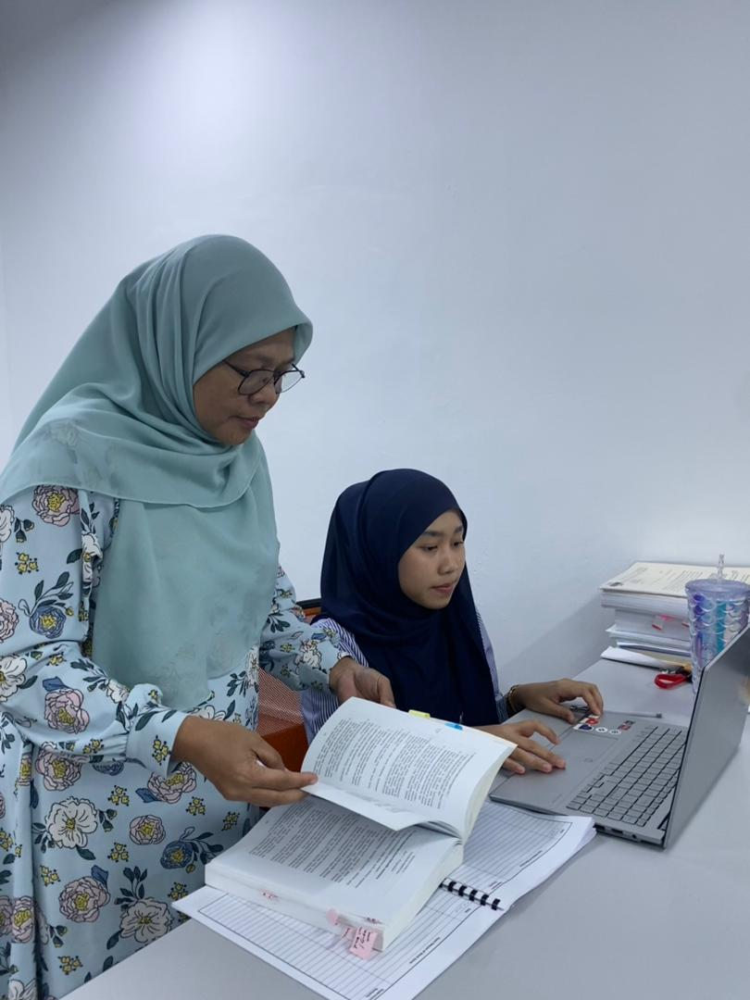
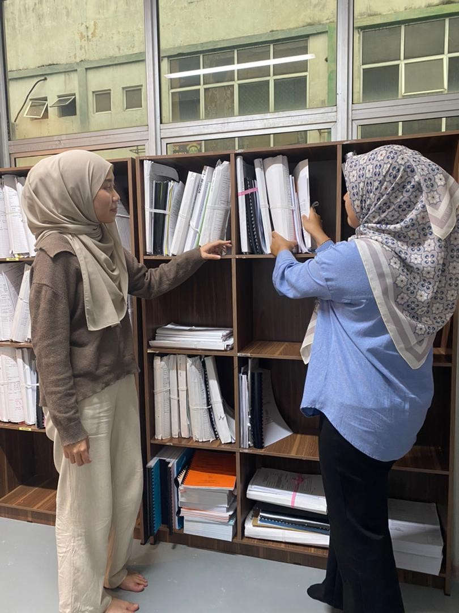
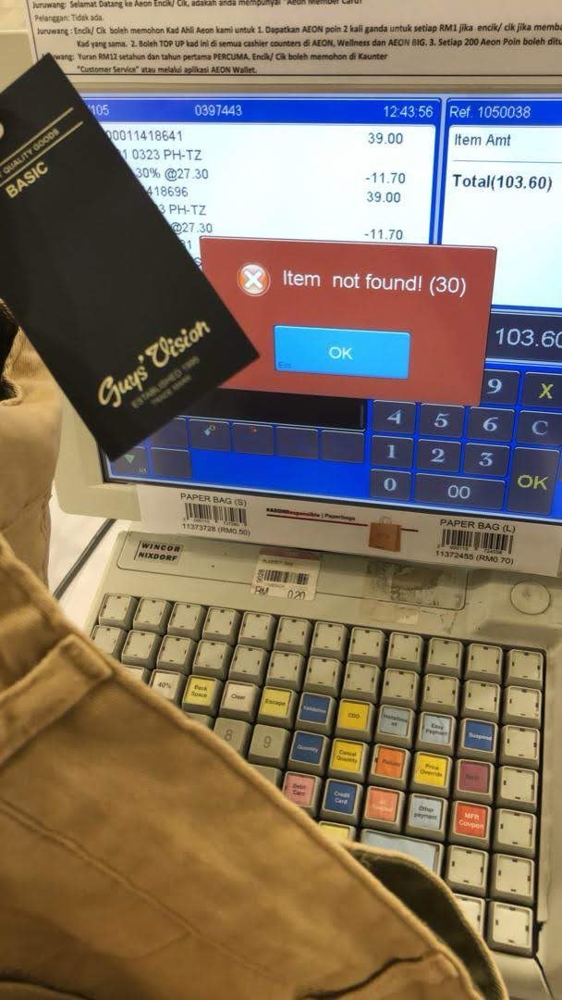
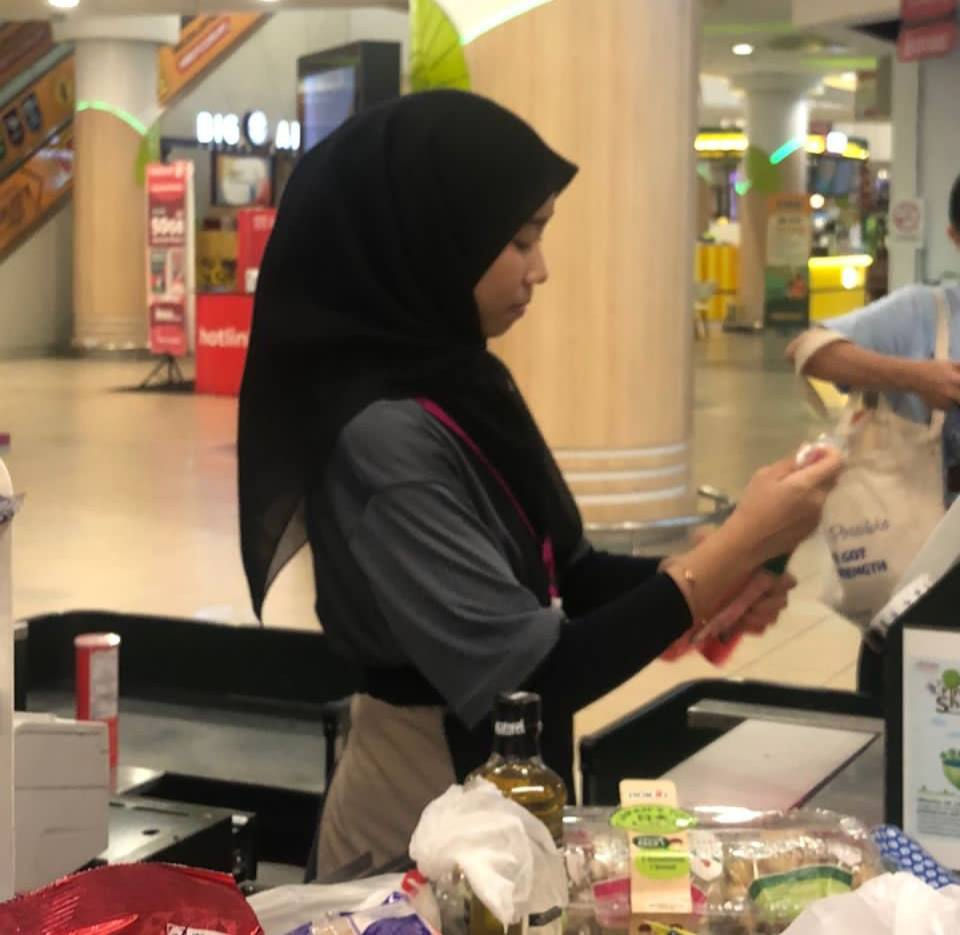
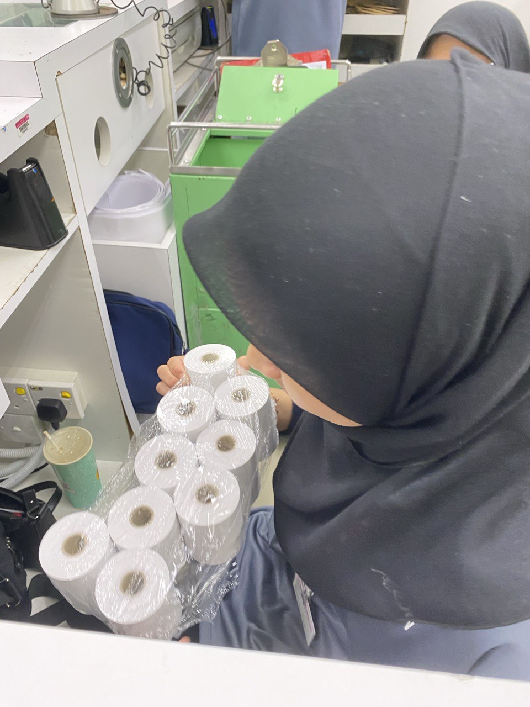

Internship
March 2025 – August 2025
Completed an internship at a law firm, assisting with the organization,
classification, and digital management of legal records using professional
information management techniques.
Internship Moments at Ahmadnurul & Associates

Maintained secure, accessible digital files for the firm.

Collaborated with senior staff on digitization projects.

Organized legal documents efficiently for case preparation.
AEON Mall
March 2023 – July 2023
Worked as a part-time retail assistant, supporting customer service,
cashier operations, inventory management, and daily store organization.
AEON Mall Moments

Scanning coding materials shows the process of digitizing information.

Scanning items as a cashier involves recording transaction data accurately using a computerized system.

Arranging items requires organizing and categorizing resources properly.